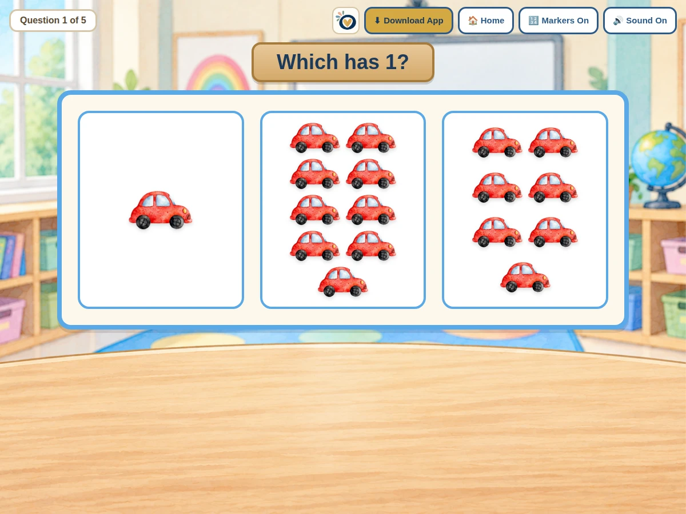

Ways to use it
- Compare groups of objects and find the one with the right amount.
- Use counting markers to check each group.
How to play
- Choose the highest number and how many questions in Teacher Setup.
- Look at each group and count.
- Tap the group that matches the target number.
Practical details
Teacher Setup sets the highest number to count to (5, 10, or 20), the number of questions, and whether counting markers show. Sound and markers can be toggled during play.
Explore together
Invite children to explain what they notice and talk through their choices.